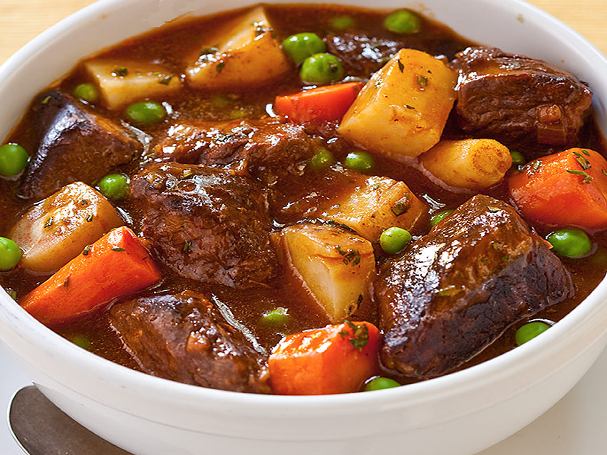

Hearty Beef Stew

Beef stew is the epitome of comfort food, a warming and satisfying dish
that fills your home with inviting aromas as it simmers on the stove.
Tender chunks of beef, vibrant vegetables, and savory broth come together
to create a meal that warms both body and soul. Whether enjoyed on a
chilly evening or as a gathering with loved ones, beef stew promises
nourishment, flavor, and a sense of home.
Ingredients
- 2 pounds (900g) beef chuck, cut into 1-inch cubes
- 2 tablespoons olive oil
- 1 onion, chopped
- 4 cloves garlic, minced
- 4 carrots, peeled and sliced
- 4 celery stalks, sliced
- 2 potatoes, peeled and diced
- 1 cup frozen peas
- 4 cups beef broth
- 1 cup red wine (optional)
- 2 tablespoons tomato paste
- 2 bay leaves
- 1 teaspoon dried thyme
- Salt and pepper to taste
- 2 tablespoons all-purpose flour (optional, for thickening)
Instructions
Brown the Beef:
-
Heat olive oil in a large Dutch oven or heavy-bottomed pot over
medium-high heat.
-
Season the beef cubes with salt and pepper, then add them to the pot
in batches, ensuring they are browned on all sides. Remove the browned
beef and set aside.
Sauté the Aromatics:
-
In the same pot, add chopped onions and minced garlic. Sauté until
onions are translucent and garlic is fragrant.
-
Add carrots and celery, and cook for a few minutes until they begin to
soften.
Combine the Ingredients:
-
Return the browned beef to the pot. Add diced potatoes, frozen peas,
beef broth, red wine (if using), tomato paste, bay leaves, and dried
thyme.
- Stir to combine all ingredients. Bring the stew to a simmer.
Simmer the Stew:
-
Reduce the heat to low and cover the pot. Let the stew simmer gently
for 1.5 to 2 hours, or until the beef is tender and the flavors have
melded together. Stir occasionally.
Thicken the Stew:
-
If you prefer a thicker stew, you can make a slurry by mixing 2
tablespoons of flour with a bit of water until smooth. Stir the slurry
into the stew and cook for an additional 10-15 minutes, or until
thickened.
Serve and Enjoy:
- Discard the bay leaves before serving.
-
Ladle the hot beef stew into bowls and serve with crusty bread or
fluffy mashed potatoes.
- Garnish with fresh parsley if desired.
-
Enjoy the heartwarming flavors of this classic beef stew, perfect for
any occasion and sure to leave everyone feeling warm and satisfied.
Home